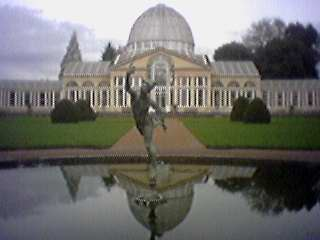
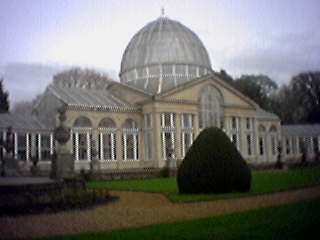
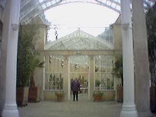
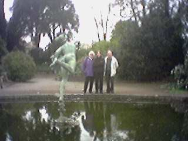
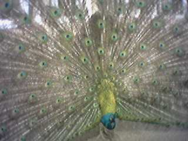
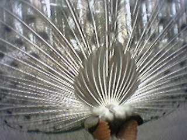
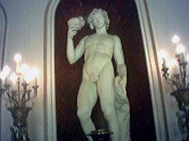
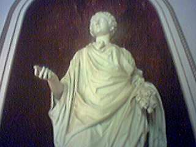

Having never been before, we decided to visit Syon House and Gardens whilst my Parents were visiting. It isn't very far away from our house and so it wasn't a long journey to make. I think we were all quite impressed with it. We paid to visit the house and the gardens and spent quite a bit of time wandering around them. They provide you with "interpreters" — a personal audio guide to the house, you press the relevant number on the keypad and a pre-recording tells you all about the room you are in. Not a new idea I know, but quite good anyway. Much better than a guide book (in my opinion).
Below you'll find some of the photos we took with the eyemodule. We have lots more photos of the peacock. It wasn't just used to having it's photo taken, it almost demanded it, turning around every few minutes to make sure it's public got a good view of it.
|  |  |
|  |  |
|  |  |
|  |  |
Back to index page